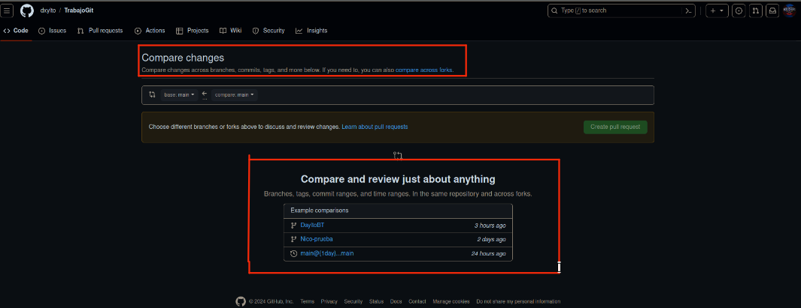

Cuando realizas una pull request, lo que haces es solicitar que otro desarrollador incorpore una rama de tu repositorio al suyo.
Para poder utilizar el Pull Request tienes que entrar primero en GitHub.
Lo siguiente que vas a hacer es dirigirte al apartado de Pull Request y darle a "New Pull Request".
Acto seguido te llevara a un apartado de la página de GitHub llamada "Compare Changes" en la que te dejara comparar tu trabajo con el que ya estaba subido previamente.
Permite a los equipos trabajar de manera eficiente y colaborativa, asegurandose de que los cambios sean revisados y probados antes de incorporarse a la rama principal.